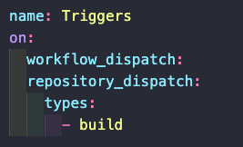

Workflows can be triggered with different events. These events can be any GitHub event: push, pull-requests opened or closed, comments, etc. Triggers must be specified with the on keyword of the yaml file. We can pass a single value:


If we want the same workflow to trigger on different events we can pass an array of GitHub events to the on keyword. The workflow will then trigger whenever at least one of the triggers is met.
Some events have activity types. To use the activities the value that we pass to the on keyword must be an object. Each attribute in this object must be itself an object named after a valid GitHub event (like push, pull_request, etc). Inside each of these object we can define the types key and pass to it an array of event activity types on which the workflow should trigger.
Events that have activity types will have some of those set by default. For example, if we trigger a workflow on: pull_request, the workflow will be triggered on opened, synchronized, or reopened by default.

The complete list of events and activity types can be found here.
To trigger workflows on a certain schedule we can use cron jobs scheduling. Scheduling needs to be added by passing the schedule value to the on key. This should be an array. Each element of the array needs to contain an object with the key cron. The value of this key needs to be a string representing a cron expression. You can use crontab guru to create cron expressions.

We can also trigger workflows on external events. To do so we need to use the repository_dispatch value, and specify which activity types should trigger the workflow.
These dispatch requests need to come to the API endpoint
They need to be POST requests with the HEADERS Accept: application/vmd.github.everest-preview+json, and Content-Type: application/json. The body of the request needs to be a JSON object with an event_type that matches at least one activity type for that trigger.